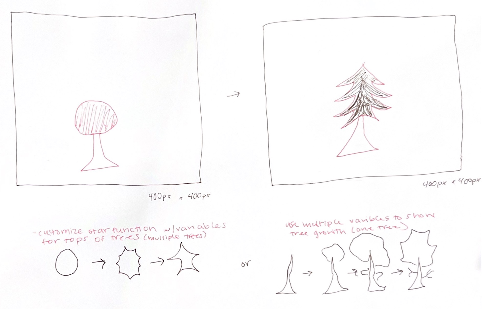

Project Three
Instructions: Interact with the drawing by hovering your mouse in a circle around the perimeter of the canvas. Click the canvas to change the seasons.
Initial Sketch
This is my initial sketch showing the intention to produce the randomized animation of a tree growing.
Design Process + Reflections
First, I declared all user-defined variables. Then, I uploaded images for the background. Then I created the basic shape primatives for the tree trunk. Then, I added the star function for the tree leaves and used mouseX and mouseY to create varying size. I then added rgb color ranges and variables in an array for the diverse effect using the random function. Then using if then statements, I created a rotation for the seasons, so that the season on the star and the background would change with mousePressed. This process took me a while and exploring new functions to complete. I most struggled with getting the timing right for the random function.